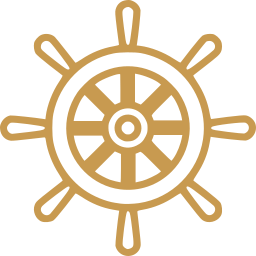

Mar i Ría
"Más que una Conserva, una Historia Familiar."

En
Desde nuestra costa, seleccionamos artesanalmente los tesoros del mar para ofrecer conservas que son un auténtico manjar, libres de atajos y llenas de sabor."
Nuestra Filosofía
Los Pilares de Mar i Ría
Creemos en la calidad que perdura y en el sabor que respeta el origen.
Estos son los principios que guían cada lata de nuestras conservas.
Origen Innegociable
Solo trabajamos con pesca local y sostenible.
Conocemos a nuestros pescadores y aseguramos que cada pieza cumpla con los más altos estándares de frescura.
El Arte del Proceso
Cada conserva de Mariría es elaborada a mano.
Desde la limpieza minuciosa hasta el envasado final, la mano humana garantiza una calidad insuperable.
Recetas de Siempre
Rescatamos y mantenemos vivas las recetas de nuestras abuelas.
Menos ingredientes, más sabor.
La simplicidad es nuestra mejor especia y secreto.
Compromiso y Sostenibilidad
Nos esforzamos por reducir nuestro impacto ambiental,
utilizando embalajes responsables
y apoyando las prácticas de pesca que preservan el ecosistema marino.
La Historia Detrás de Cada Lata:
El Alma de
En un pequeño pueblo pesquero de la costa gallega,donde el ritmo de la vida lo marcaba la mareay el sustento venía del Atlántico, nació una tradición.
No era solo la pesca, sino el arte de preservar el mar en su máxima expresión. Esta es la historia de
El Origen: Un Legado Familiar y la Abuela María
Fue ella quien, con su sabiduría y sus recetas ancestrales, transformó simples pescados y mariscos en auténticos tesoros enlatados.
En una época donde el despilfarro no era una opción, la Abuela María perfeccionó las técnicas de conservación para asegurar que el sabor del océano pudiera disfrutarse durante todo el año, alimentando a su familia y a toda la comunidad.

Ahora que conoces nuestra historia, nuestra dedicación y el legado de la Abuela María, te invitamos a experimentar la diferencia de una conserva hecha con el máximo amor y respeto.
El auténtico sabor del mar te espera.